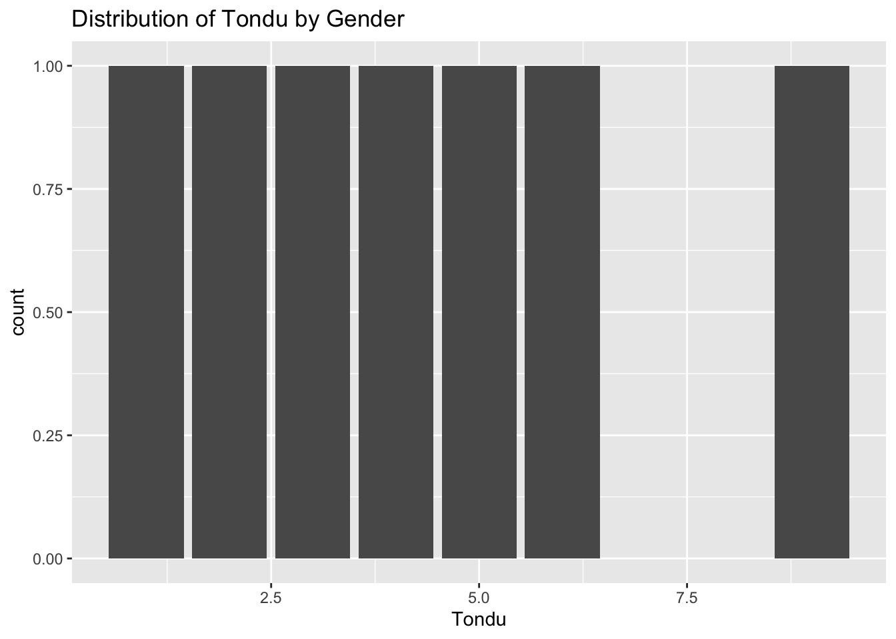
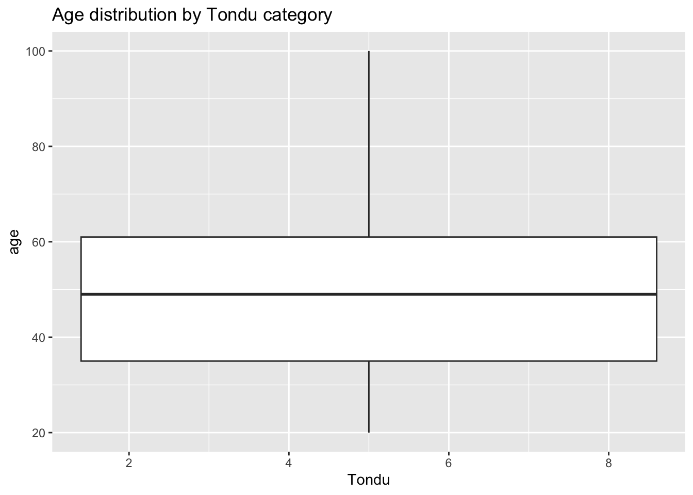
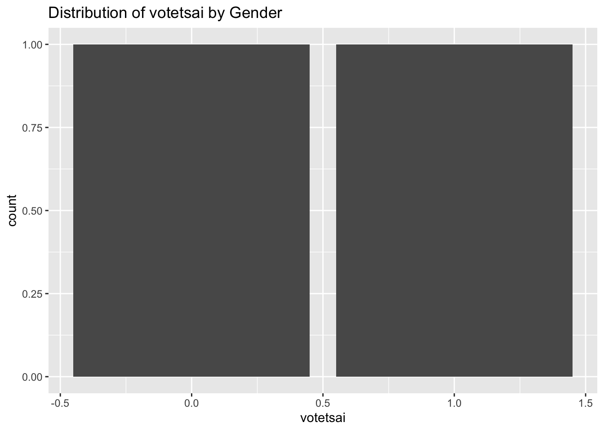
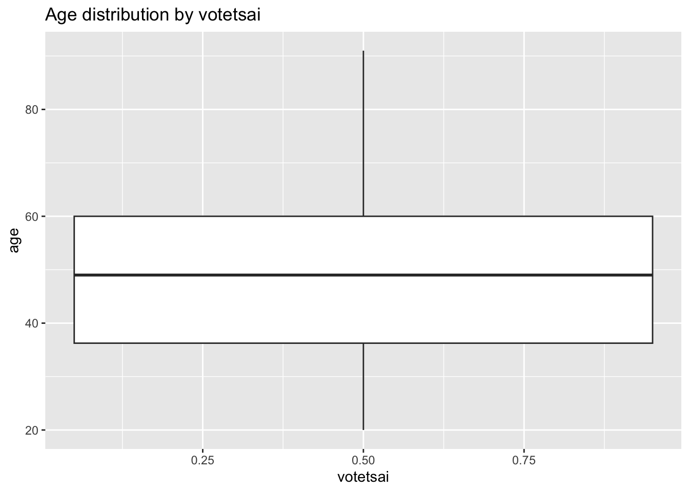
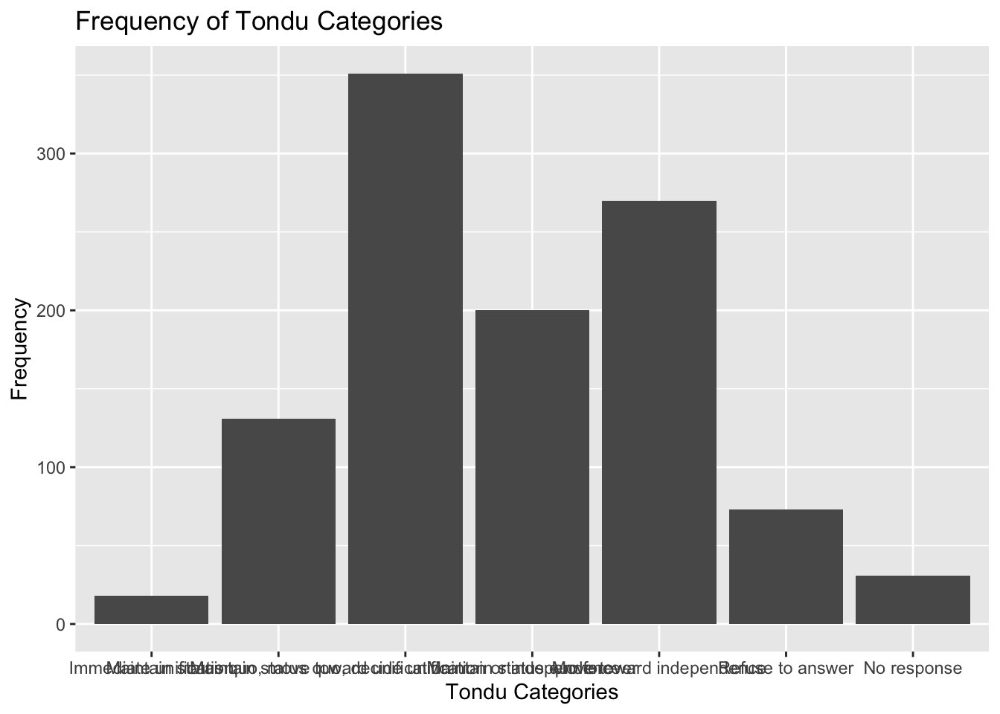

library(haven)
url <- "https://raw.githubusercontent.com/datageneration/home/master/DataProgramming/data/TEDS_2016.dta"
TEDS_2016 <- read_stata(url)assignment2
str(TEDS_2016)tibble [1,690 × 54] (S3: tbl_df/tbl/data.frame)
$ District : dbl+lbl [1:1690] 201, 201, 201, 201, 201, 201, 201, 201, 201, 201, 201...
..@ label : chr "District"
..@ format.stata: chr "%10.0g"
..@ labels : Named num [1:73] 201 401 501 502 701 702 703 704 801 802 ...
.. ..- attr(*, "names")= chr [1:73] "Yi Lan County Single District" "Hsinchu County Single District" "Miaoli County 1st District" "Miaoli County 2nd District" ...
$ Sex : dbl+lbl [1:1690] 2, 2, 1, 1, 2, 2, 1, 2, 2, 1, 1, 2, 2, 2, 2, 2, 2, 1,...
..@ label : chr "Sex"
..@ format.stata: chr "%10.0g"
..@ labels : Named num [1:2] 1 2
.. ..- attr(*, "names")= chr [1:2] "Male" "Female"
$ Age : dbl+lbl [1:1690] 4, 2, 5, 4, 5, 5, 5, 4, 5, 4, 5, 1, 5, 3, 4, 5, 4, 5,...
..@ label : chr "Age"
..@ format.stata: chr "%10.0g"
..@ labels : Named num [1:5] 1 2 3 4 5
.. ..- attr(*, "names")= chr [1:5] "20-29" "30-39" "40-49" "50-59" ...
$ Edu : dbl+lbl [1:1690] 4, 5, 5, 2, 1, 2, 1, 5, 1, 1, 1, 2, 1, 5, 5, 1, 3, 4,...
..@ label : chr "Education"
..@ format.stata: chr "%10.0g"
..@ labels : Named num [1:6] 1 2 3 4 5 9
.. ..- attr(*, "names")= chr [1:6] "Below elementary school" "Junior high school" "Senior high school" "College" ...
$ Arear : dbl+lbl [1:1690] 1, 1, 1, 1, 1, 1, 1, 1, 1, 1, 1, 1, 1, 1, 1, 1, 1, 1,...
..@ label : chr "Area"
..@ format.stata: chr "%10.0g"
..@ labels : Named num [1:6] 1 2 3 4 5 6
.. ..- attr(*, "names")= chr [1:6] "Taipei, New Taipei, Keelung and Yi Lan" "Taoyuan, Hsinchu and Miaoli" "Taichung, Changhua and Nantou" "Yunlin, Chiayi and Tainan" ...
$ Career : dbl+lbl [1:1690] 1, 2, 1, 4, 3, 2, 4, 1, 4, 3, 3, 5, 5, 4, 1, 5, 2, 2,...
..@ label : chr "Occupations5"
..@ format.stata: chr "%10.0g"
..@ labels : Named num [1:5] 1 2 3 4 5
.. ..- attr(*, "names")= chr [1:5] "Hight-class WHITE COLLAR" "Low-class WHITE COLLAR" "FARMER" "WORKER" ...
$ Career8 : dbl+lbl [1:1690] 1, 3, 1, 4, 5, 7, 4, 2, 4, 5, 5, 7, 7, 7, 2, 7, 3, 1,...
..@ label : chr "Occupation8"
..@ format.stata: chr "%10.0g"
..@ labels : Named num [1:8] 1 2 3 4 5 6 7 8
.. ..- attr(*, "names")= chr [1:8] "Civil servants" "Managers and Professionals (priv.)" "CLERKS (priv.)" "Labor (priv.)" ...
$ Ethnic : dbl+lbl [1:1690] 1, 2, 2, 1, 9, 1, 2, 1, 1, 2, 1, 1, 2, 1, 2, 9, 2, 2,...
..@ label : chr "Ethnic"
..@ format.stata: chr "%10.0g"
..@ labels : Named num [1:4] 1 2 3 9
.. ..- attr(*, "names")= chr [1:4] "Taiwanese" "Both" "Chinese" "Noresponse"
$ Party : dbl+lbl [1:1690] 25, 25, 3, 25, 25, 6, 25, 24, 25, 25, 6, 5, 25, ...
..@ label : chr "Party Preference"
..@ format.stata: chr "%10.0g"
..@ labels : Named num [1:26] 1 2 3 4 5 6 7 8 9 10 ...
.. ..- attr(*, "names")= chr [1:26] "Strongly support KMT" "Somewhat support KMT" "Lean to KMT" "Somewhat lean to KMT" ...
$ PartyID : dbl+lbl [1:1690] 9, 9, 1, 9, 9, 2, 9, 6, 9, 9, 2, 2, 9, 1, 1, 9, 9, 9,...
..@ label : chr "Party Identification"
..@ format.stata: chr "%10.0g"
..@ labels : Named num [1:7] 1 2 3 4 5 6 9
.. ..- attr(*, "names")= chr [1:7] "KMT" "DPP" "NP" "PFP" ...
$ Tondu : dbl+lbl [1:1690] 3, 5, 3, 5, 9, 4, 9, 6, 9, 9, 5, 5, 9, 5, 4, 9, 9, 4,...
..@ label : chr "Position on unification and independence"
..@ format.stata: chr "%10.0g"
..@ labels : Named num [1:7] 1 2 3 4 5 6 9
.. ..- attr(*, "names")= chr [1:7] "Immediate unification" "Maintain the status quo,move toward unification" "Maintain the status quo, decide either unification or independence" "Maintain the status quo forever" ...
$ Tondu3 : dbl+lbl [1:1690] 2, 3, 2, 3, 9, 2, 9, 3, 9, 9, 3, 3, 9, 3, 2, 9, 9, 2,...
..@ label : chr "3 categories of TONDU"
..@ format.stata: chr "%10.0g"
..@ labels : Named num [1:4] 1 2 3 9
.. ..- attr(*, "names")= chr [1:4] "Unification" "Maintain the status quo" "Independence" "Nonresponse"
$ nI2 : dbl+lbl [1:1690] 3, 98, 98, 3, 98, 98, 98, 3, 98, 1, 2, 98, 98, ...
..@ label : chr "Who is the current the premier of our country?"
..@ format.stata: chr "%10.0g"
..@ labels : Named num [1:5] 1 2 3 95 98
.. ..- attr(*, "names")= chr [1:5] "Correct" "Incorrect" "I know but can't remember the name" "Refuse to answer" ...
$ votetsai : num [1:1690] NA 1 0 NA NA 1 1 1 1 NA ...
..- attr(*, "format.stata")= chr "%9.0g"
$ green : num [1:1690] 0 0 0 0 0 1 0 1 0 0 ...
..- attr(*, "format.stata")= chr "%9.0g"
$ votetsai_nm : num [1:1690] NA 1 0 NA NA 1 1 1 1 NA ...
..- attr(*, "format.stata")= chr "%9.0g"
$ votetsai_all : num [1:1690] 0 1 0 0 0 1 1 1 1 NA ...
..- attr(*, "format.stata")= chr "%9.0g"
$ Independence : num [1:1690] 0 1 0 1 0 0 0 1 0 0 ...
..- attr(*, "format.stata")= chr "%9.0g"
$ Unification : num [1:1690] 0 0 0 0 0 0 0 0 0 0 ...
..- attr(*, "format.stata")= chr "%9.0g"
$ sq : num [1:1690] 1 0 1 0 0 1 0 0 0 0 ...
..- attr(*, "format.stata")= chr "%9.0g"
$ Taiwanese : num [1:1690] 1 0 0 1 0 1 0 1 1 0 ...
..- attr(*, "format.stata")= chr "%9.0g"
$ edu : num [1:1690] 4 5 5 2 1 2 1 5 1 1 ...
..- attr(*, "format.stata")= chr "%9.0g"
$ female : num [1:1690] 1 1 0 0 1 1 0 1 1 0 ...
..- attr(*, "format.stata")= chr "%9.0g"
$ whitecollar : num [1:1690] 1 1 1 0 0 1 0 1 0 0 ...
..- attr(*, "format.stata")= chr "%9.0g"
$ lowincome : num [1:1690] 4 4 5 4 3 5 2 5 5 5 ...
..- attr(*, "label")= chr "How serious do you think low income of salaryman?"
..- attr(*, "format.stata")= chr "%9.0g"
$ income : num [1:1690] 8 7 8 5 5.5 9 1 10 2 5.5 ...
..- attr(*, "format.stata")= chr "%9.0g"
$ income_nm : num [1:1690] 8 7 8 5 NA 9 1 10 2 NA ...
..- attr(*, "format.stata")= chr "%9.0g"
$ age : num [1:1690] 59 39 63 55 76 64 75 54 64 59 ...
..- attr(*, "format.stata")= chr "%9.0g"
$ KMT : num [1:1690] 0 0 1 0 0 0 0 0 0 0 ...
..- attr(*, "format.stata")= chr "%9.0g"
$ DPP : num [1:1690] 0 0 0 0 0 1 0 0 0 0 ...
..- attr(*, "format.stata")= chr "%9.0g"
$ npp : num [1:1690] 0 0 0 0 0 0 0 1 0 0 ...
..- attr(*, "format.stata")= chr "%9.0g"
$ noparty : num [1:1690] 1 1 0 1 1 0 1 0 1 1 ...
..- attr(*, "format.stata")= chr "%9.0g"
$ pfp : num [1:1690] 0 0 0 0 0 0 0 0 0 0 ...
..- attr(*, "format.stata")= chr "%9.0g"
$ South : num [1:1690] 0 0 0 0 0 0 0 0 0 0 ...
..- attr(*, "format.stata")= chr "%9.0g"
$ north : num [1:1690] 1 1 1 1 1 1 1 1 1 1 ...
..- attr(*, "format.stata")= chr "%9.0g"
$ Minnan_father : num [1:1690] 1 1 1 1 1 1 1 1 1 1 ...
..- attr(*, "format.stata")= chr "%9.0g"
$ Mainland_father: num [1:1690] 0 0 0 0 0 0 0 0 0 0 ...
..- attr(*, "format.stata")= chr "%9.0g"
$ Econ_worse : num [1:1690] 0 0 1 1 0 1 1 1 1 1 ...
..- attr(*, "format.stata")= chr "%9.0g"
$ Inequality : num [1:1690] 1 1 1 1 0 1 0 1 1 1 ...
..- attr(*, "format.stata")= chr "%9.0g"
$ inequality5 : num [1:1690] 4 5 5 5 3 5 3 5 5 5 ...
..- attr(*, "format.stata")= chr "%9.0g"
$ econworse5 : num [1:1690] 3 3 4 5 3 4 4 5 5 5 ...
..- attr(*, "format.stata")= chr "%9.0g"
$ Govt_for_public: num [1:1690] 1 1 1 0 0 0 0 0 0 0 ...
..- attr(*, "format.stata")= chr "%9.0g"
$ pubwelf5 : num [1:1690] 5 5 4 1 3 2 2 1 3 2 ...
..- attr(*, "format.stata")= chr "%9.0g"
$ Govt_dont_care : num [1:1690] 0 0 1 1 0 1 1 1 0 1 ...
..- attr(*, "format.stata")= chr "%9.0g"
$ highincome : num [1:1690] 1 1 1 1 NA 1 0 1 0 NA ...
..- attr(*, "format.stata")= chr "%9.0g"
$ votekmt : num [1:1690] 0 0 1 0 0 0 0 0 0 0 ...
..- attr(*, "format.stata")= chr "%9.0g"
$ votekmt_nm : num [1:1690] NA 0 1 NA NA 0 0 0 0 NA ...
..- attr(*, "format.stata")= chr "%9.0g"
$ Blue : num [1:1690] 0 0 0 0 0 0 0 0 0 0 ...
..- attr(*, "format.stata")= chr "%9.0g"
$ Green : num [1:1690] 0 0 0 0 0 0 0 0 0 0 ...
..- attr(*, "format.stata")= chr "%9.0g"
$ No_Party : num [1:1690] 0 0 0 0 0 0 0 0 0 0 ...
..- attr(*, "format.stata")= chr "%9.0g"
$ voteblue : num [1:1690] 0 0 1 0 0 0 0 0 0 0 ...
..- attr(*, "format.stata")= chr "%9.0g"
$ voteblue_nm : num [1:1690] NA 0 1 NA NA 0 0 0 0 NA ...
..- attr(*, "format.stata")= chr "%9.0g"
$ votedpp_1 : num [1:1690] NA 1 0 NA NA 1 1 1 1 0 ...
..- attr(*, "format.stata")= chr "%9.0g"
$ votekmt_1 : num [1:1690] NA 0 1 NA NA 0 0 0 0 0 ...
..- attr(*, "format.stata")= chr "%9.0g"How do you deal with missing values?
# Remove rows with any missing values
data_clean <- na.omit(TEDS_2016)
# Remove rows with missing values in specific columns
data_clean <- TEDS_2016[complete.cases(TEDS_2016$female, TEDS_2016$DPP, TEDS_2016$age, TEDS_2016$income, TEDS_2016$edu, TEDS_2016$Taiwanese, TEDS_2016$Econ_worse), ]Regression analysis
model <- lm(PartyID ~ Age + Sex + lowincome + income + noparty, data = TEDS_2016)
summary(model)
Call:
lm(formula = PartyID ~ Age + Sex + lowincome + income + noparty,
data = TEDS_2016)
Residuals:
Min 1Q Median 3Q Max
-1.1952 -0.2506 -0.0033 0.1528 4.6144
Coefficients:
Estimate Std. Error t value Pr(>|t|)
(Intercept) 1.795643 0.148157 12.120 < 2e-16 ***
Age -0.087018 0.014537 -5.986 2.62e-09 ***
Sex -0.074856 0.041064 -1.823 0.0685 .
lowincome 0.115302 0.024847 4.641 3.74e-06 ***
income -0.005010 0.007672 -0.653 0.5138
noparty 7.133082 0.042604 167.428 < 2e-16 ***
---
Signif. codes: 0 '***' 0.001 '**' 0.01 '*' 0.05 '.' 0.1 ' ' 1
Residual standard error: 0.8404 on 1684 degrees of freedom
Multiple R-squared: 0.9441, Adjusted R-squared: 0.9439
F-statistic: 5687 on 5 and 1684 DF, p-value: < 2.2e-16library(ggplot2)
ggplot(TEDS_2016, aes(x = Tondu, fill = female)) + geom_bar(position = "fill") + labs(title = "Distribution of Tondu by Gender")Warning: The following aesthetics were dropped during statistical transformation: fill
ℹ This can happen when ggplot fails to infer the correct grouping structure in
the data.
ℹ Did you forget to specify a `group` aesthetic or to convert a numerical
variable into a factor?
ggplot(TEDS_2016, aes(x = Tondu, y = age)) + geom_boxplot() + labs(title = "Age distribution by Tondu category")Warning: Continuous x aesthetic
ℹ did you forget `aes(group = ...)`?
cross_tab <- table(TEDS_2016$Tondu, TEDS_2016$DPP)
cross_tab
0 1
1 26 1
2 147 33
3 378 168
4 256 72
5 144 236
6 38 70
9 110 11chisq.test(cross_tab)
Pearson's Chi-squared test
data: cross_tab
X-squared = 263.17, df = 6, p-value < 2.2e-16anova_model <- aov(age ~ Tondu, data = TEDS_2016)
summary(anova_model) Df Sum Sq Mean Sq F value Pr(>F)
Tondu 1 5100 5100 18.23 2.07e-05 ***
Residuals 1688 472259 280
---
Signif. codes: 0 '***' 0.001 '**' 0.01 '*' 0.05 '.' 0.1 ' ' 1How about the votesai variable?
library(ggplot2)
ggplot(TEDS_2016, aes(x = votetsai, fill = female)) + geom_bar(position = "fill") + labs(title = "Distribution of votetsai by Gender")Warning: Removed 429 rows containing non-finite values (`stat_count()`).Warning: The following aesthetics were dropped during statistical transformation: fill
ℹ This can happen when ggplot fails to infer the correct grouping structure in
the data.
ℹ Did you forget to specify a `group` aesthetic or to convert a numerical
variable into a factor?
TEDS_2016 <- na.omit(TEDS_2016)
ggplot(TEDS_2016, aes(x = votetsai, y = age)) +
geom_boxplot() +
labs(title = "Age distribution by votetsai")Warning: Continuous x aesthetic
ℹ did you forget `aes(group = ...)`?
cross_tab <- table(TEDS_2016$votetsai, TEDS_2016$DPP)
cross_tab
0 1
0 402 16
1 221 435chisq.test(cross_tab)
Pearson's Chi-squared test with Yates' continuity correction
data: cross_tab
X-squared = 406.65, df = 1, p-value < 2.2e-16correlation <- cor.test(TEDS_2016$votetsai, TEDS_2016$age)
correlation
Pearson's product-moment correlation
data: TEDS_2016$votetsai and TEDS_2016$age
t = -2.4172, df = 1072, p-value = 0.01581
alternative hypothesis: true correlation is not equal to 0
95 percent confidence interval:
-0.13285932 -0.01386881
sample estimates:
cor
-0.07362609 Frequency table and bar chart
# Assigning labels to Tondu variable
TEDS_2016$Tondu <- factor(TEDS_2016$Tondu,
labels = c("Immediate unification",
"Maintain status quo, move toward unification",
"Maintain status quo, decide unification or independence",
"Maintain status quo forever",
"Move toward independence",
"Refuse to answer",
"No response"))
# Frequency table
tondu_freq <- table(TEDS_2016$Tondu)
print(tondu_freq)
Immediate unification
18
Maintain status quo, move toward unification
131
Maintain status quo, decide unification or independence
351
Maintain status quo forever
200
Move toward independence
270
Refuse to answer
73
No response
31 # Bar chart
library(ggplot2)
ggplot(data = TEDS_2016, aes(x = Tondu)) +
geom_bar() +
labs(title = "Frequency of Tondu Categories",
x = "Tondu Categories",
y = "Frequency")